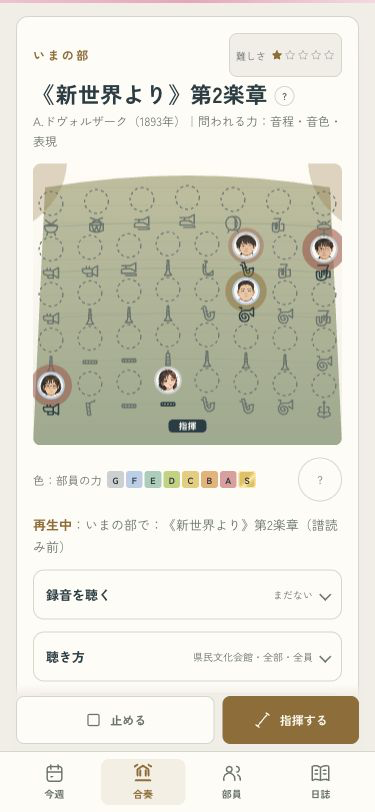
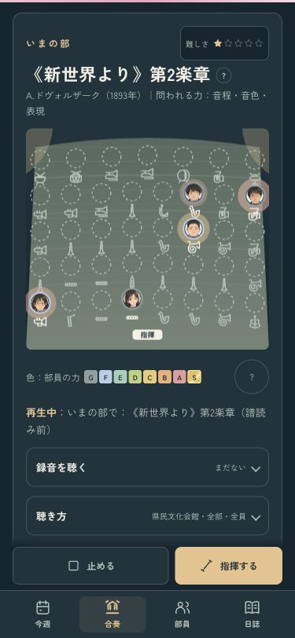
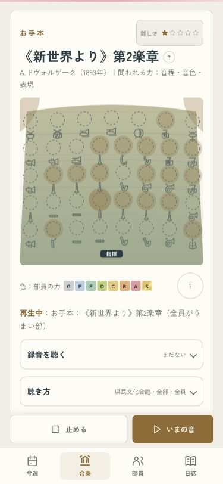
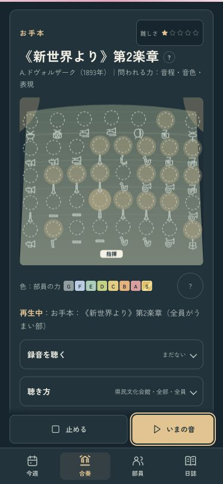
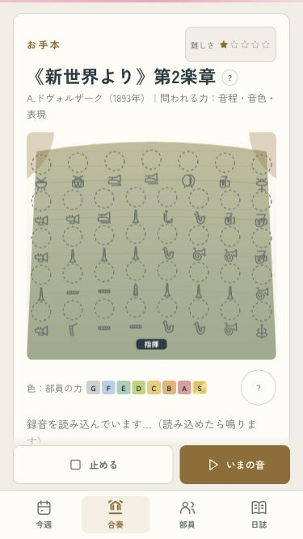
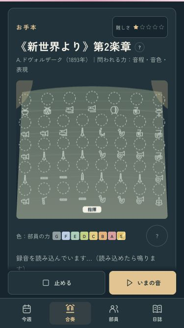

B · 舞台の中へ
お手本と、うちの部。
見出しを見て、今どちらを聴いているか分かります。お手本の「いまの音」を押すと、同じ曲を現在の部員たちの音で聴き比べられます。


お手本の表示
見出しは「お手本」。音のあるパートを聴けて、「いまの音」から現在の部へ戻れます。


小さい画面と、読み込み待ち
375×667でも、読み込み中のお手本を止める・現在の部へ切り替える操作が手元にあります。


全15曲・待機の切り替え・本人とパート・1年分の進行を確認済み。
iPhoneへ更新し、起動とプロセスを確認。実機の見た目と音はオーナー側で確認します。
ミラーリングなし · codex/design · pushなし · 変更と確認の記録